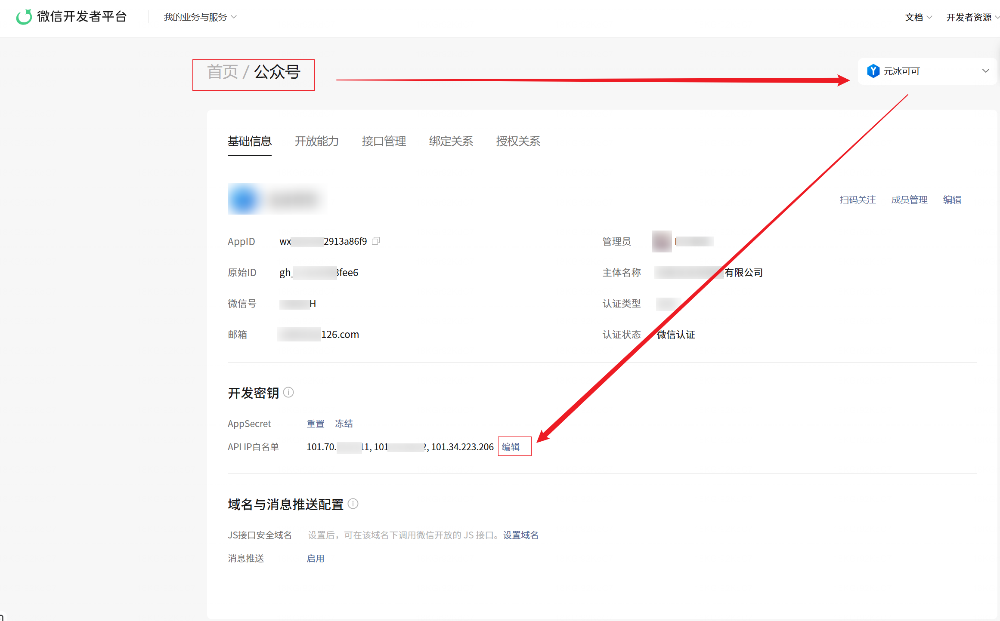

不装插件、不写代码、不要服务器。把一个 MCP 地址交给你的 AI 助手（Claude、Cursor、Cherry Studio…），它就能替你传图、排版、发草稿——样式、文本、图片，原汁原味落进公众号草稿箱。

在 AI 客户端的 MCP 设置里粘贴以下配置（Claude Desktop / Cursor / Cherry Studio 等通用）：
{
"mcpServers": {
"gzh-draft": {
"url": "https://atest-0gvlenb46567649d.service.tcloudbase.com/wxdraft/mcp/"
}
}
}
无需填任何密钥，保存后重启/刷新客户端即可看到 sync_draft 等工具。
把下面这段话复制给你的 AI 助手，替换其中的公众号信息和内容：
请帮我把这篇内容发到我的公众号草稿箱。 公众号 AppID：wxYOUR_APPID 公众号 AppSecret：YOUR_SECRET 标题：为什么你的公众号需要一位 AI 排版助手 正文： <section style="font-size:15px;color:#333;line-height:1.8;padding:0 16px"> <p>在这里粘贴你的正文，支持完整的内联样式，排版会原样保留。</p> <img src="https://example.com/any-image.png" style="width:100%"> </section> 封面图：https://example.com/cover.jpg
AI 会自动完成：图片转存素材库 → 替换正文图片地址 → 写入草稿箱。发完去公众号后台「草稿箱」查看。首次需要 AppSecret，之后只需 AppID（服务会记住你的公众号）。
正文只替换图片地址，字体、颜色、排版、结构一个字节都不动，所见即所得。
外链图片自动转存到公众号自己的素材库，第三方图床失效也不再裂图。
首次提供 AppID/Secret 后服务自动记忆，之后只需 AppID；换绑新密钥以最新一次为准。
Streamable HTTP 协议，主流 AI 客户端原生支持，无需安装任何插件。
网页上填 AppID 和正文，点一下直接进草稿箱。
不需要。这是标准 MCP 服务，任何支持 MCP 的 AI 客户端都能直接连接；也可以直接在网页上试用，零安装。
图片转存到该公众号自己的素材库；本服务不留存任何正文与图片，过程文件处理完立即删除。
不用。首次提供后服务会记住你的公众号，之后只带 AppID 即可；如果换了新的 Secret，以最新一次提供的为准。
图片支持 png / jpg / gif / bmp（webp 请先转格式），单张不超过 10MB；一次最多 8 篇；标题 ≤64 字、摘要 ≤120 字。
发送邮件到 961589511@qq.com，获取支持与商业授权。